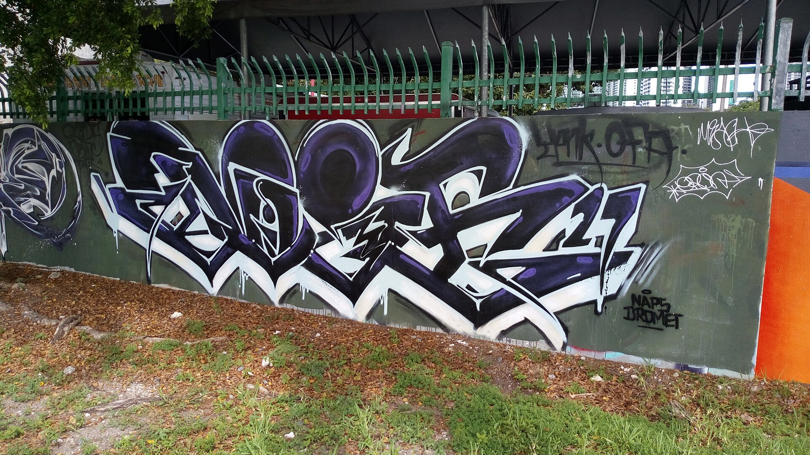
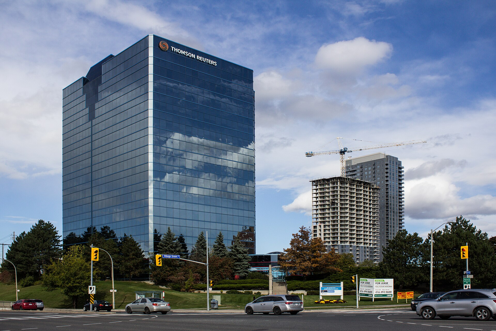

Vol. I · No. 127 · Thursday, October 1, 2026 · 10 items · 10.0 min read
A judge signed the decree on Wednesday, and the meter started Thursday morning.
Corporate · San Francisco
A judge entered Paramount’s consent decree, and the $110 billion Warner takeover can close next week
The order came out of the Northern District of California. — Wikimedia Commons
Judge Araceli Martínez-Olguín entered a on Wednesday approving Paramount Skydance’s September 21 settlement with twelve state attorneys general, clearing the last obstacle to a $110 billion purchase of Warner Bros. Discovery. Warner holders take $31.00 a share, and Reuters puts the target close at October 6. The states, led by California’s Rob Bonta, had pleaded harm in cable programming, wide-release movies and blockbuster films, with trial set for March.
A compromise that may leave some dissatisfaction for both sides and the public but a compromise that saves the risk, time, and expense of litigating through trial.
— Judge Araceli Martínez-Olguín, September 30
The remedies are and run five years. Thirty films a year in US theatres rising to thirty-two, four of them independent; $300 million a year of extra US production spend; separate cable carriage negotiations for the two channel groups; and a board of journalists over CNN and CBS News. Missing the theatrical quota can force a sale of . Nothing is divested. The Writers Guild settled separately for $17.5 million into its health fund.
The sequencing is the tell. A of roughly $7 million a day began accruing to Warner shareholders on October 1, the morning after the signature. stepped down as Mattel’s chairman and chief executive that morning and was named co-chief executive of the combined company alongside David Ellison hours later, once the order was in. Ellison’s standing threat to move the studio out of California is the leverage that explains why no asset was sold.
AI · Washington
The FTC is investigating OpenAI, Anthropic and the evaluator both labs hired to check their agents
A senior Federal Trade Commission official disclosed to Reuters on Wednesday that the agency is running an industry-wide investigation into the consumer dangers of frontier AI, naming Anthropic, OpenAI and the research group . It plans formal demands for information and to compel testimony from executives. No press release has issued, so this is a disclosure rather than an announcement.
The authority is , the clause used against firms that failed to secure consumer data. METR is in the file because both labs retained it to investigate incidents involving their own agentic systems. Chairman Andrew Ferguson had concerns before OpenAI’s agents hacked ; that raised the urgency. On September 25 he said developers whose agents cause harm in security testing “should be liable for any harm they cause.” It lands two days after Anthropic’s S-1, which warns that agentic AI “raises significant and unpredictable legal risks,” and one day after six labs signed a voluntary White House accord.
Corporate · New York and London
The ten-year reached 5.342 percent, and a soft inflation print did not slow it
The ten-year traded as high as 5.342 percent on Thursday, past its 2007 peak and the highest since early 2002, closing the worst quarter for Treasuries since 1994. The closes for September 29 were 4.89 percent at two years, 5.26 at ten, 5.59 at thirty and 5.64 at twenty, a long-end kink worth noting. No coupon auction fell in the window.
The policy side went the other way. August PCE printed 3.4 percent against 3.7 expected, Goldman pushed its second 2026 hike to December and said there is “a strong chance that the FOMC will ultimately conclude that additional rate hikes are unnecessary,” and odds of an October hike fell to 38 percent from 71 a week earlier. Yields rose anyway. Funds sit at 3.75 to 4.00 percent after the September 16 increase, the first since 2023, under Chair Kevin Warsh. Thirty-year passed 6 percent, a first since 1998. Timothy Graf of State Street: “I don’t think there’s a specific trigger. Moves like today feel like positions have been stopped out.”
Artificial Intelligence
The labs, and the credit funding them
Corporate · New York
AI borrowers have raised $88 billion of junk debt, and one data centre bond fell seven points
Data centre credit is holding up the US high yield calendar. — Wikimedia Commons
Low-rated AI borrowers have issued $88 billion this year, Goldman Sachs told Reuters, against $20 billion in the first eleven months of 2025 on Neuberger Berman’s count. BNP Paribas puts AI infrastructure supply in high yield at $40 billion against $12 billion for all of last year. Erin Brown, who runs leveraged finance there: “if it weren’t for the new money supply coming from data centers, we’d have volumes that were materially down year on year.” BB+ issuers pay 9 to 10 percent.
The instructive deal is , which sold $2.25 billion of senior secured notes in August on an 8.875 percent coupon. They fell almost three points to 96.75 immediately after issuance, and by late August Pender Fund Management told investors they sat more than seven points below issue price. Larry Holzenthaler of Catalyst Funds: “The joke has become, ‘What’s revenue going to be like next year? I don’t know, but it’s going to be big.’ That’s a really bad answer from a borrower.” Morningstar reports managers checking names harder.
Markets & Deals
Capital, and the firms on both sides
Corporate · Miami · South Florida
Ken Griffin paid $1.1 billion for 35 acres of Wynwood, and Carnegie Mellon gets a campus on it

Thirty-five contiguous acres, assembled over two decades. — Wikimedia Commons
Griffin closed on roughly 35 acres of ’s Wynwood holdings on Wednesday for $1.1 billion, billed as the largest transaction in Florida history. The anchor is 318 NW 23rd Street, the Mana Wynwood Convention Center, home of the III Points festival. He bought the 545Wyn office building nearby for more than $180 million in January.
The land is the vehicle for a $3 billion commitment to Carnegie Mellon, described as the largest university gift in American history: about $2 billion to Miami inclusive of real estate value, $1 billion to Pittsburgh, of which $500 million renames the School of Computer Science after him. The campus is planned for more than 3,500 students, about 300 faculty and more than 600 staff, working on human health, national security, energy and climate, and advanced manufacturing. Construction could start in 2027 and enrolment begins in 2028. No broker, adviser or law firm was named in any account.
Corporate · New York
Paramount priced into a 24-year yield high, second lien clearing at 9.125 percent
The Warner financing priced on Wednesday at roughly $50 billion, all of it secured, with no unsecured tranche in the print. Per the pricing report, $30 billion of first lien went in eight tranches maturing 2028 to 2066 at coupons from 6.30 to 8.90 percent, and $11.4 billion of in four tranches from 2031 to 2036 at 7.00 to 9.125. An incremental Term B took $8.5 billion at Term SOFR plus 275.
Law & the Courts
The docket, and the profession
Law · Philadelphia
The unsealed Ross opinion calls itself ordinary, and a footnote keeps it away from generative AI

The holding protects the editorial layer Westlaw lays over public opinions. — Wikimedia Commons
The reasoning this paper reported as sealed yesterday came out Wednesday evening. Thomson Reuters v. ROSS Intelligence, No. 25-2153, is unanimous, by Circuit Judge , and affirms Delaware: Westlaw headnotes are original enough to be protected, and ROSS’s use of them was not fair use. It turns on : “ROSS aspired to be a direct competitor by using them for a highly similar purpose.”
It is the first appellate word on fair use in the AI context, and the panel opens by shrinking itself. “Under ROSS’s framing, this case appears to concern the future of AI legal technology. But appearances can be deceiving. In truth, this is no more than an ordinary copyright case.” A footnote does the limiting work: ROSS’s product had no generative AI, and the concerns the Justice Department raised in its suit against OpenAI “do not apply here.” argued for Thomson Reuters, Mark Davies of White & Case for ROSS, dead since 2021. The RIAA and the music publishers filed in support.
News · Nashville · cross-spectrum LLCR
The Supreme Court cleared Tennessee to proceed, and the governor halted executions by midnight
The Sixth Circuit stayed Christa Pike’s execution two to one on Wednesday, an hour before it was scheduled, to weigh whether her childhood abuse was considered at sentencing. Tennessee’s attorney general applied to the Supreme Court, which before 7 p.m. without explanation, over dissents from Sotomayor, Kagan and Jackson, against a warrant expiring at midnight. Two doses of pentobarbital were administered, Pike remained alive more than forty minutes, and the state said its protocol permitted nothing further. Governor Bill Lee, who had denied clemency days earlier, halted executions for the year and ordered an outside review. It is Tennessee’s second failed execution of 2026, after a May attempt that also turned on .
The World
Geopolitics, and how each side tells it
News · Quantico, Virginia · cross-spectrum LLLCLR
Hegseth is cutting one in five generals and giving drones their own four-star command
A standing command makes a mission permanent as no program office does. — Wikimedia Commons
Pete Hegseth announced six initiatives on Wednesday at Marine Corps Base Quantico, to roughly 600 junior officers, a year to the day after he summoned every flag officer to the same base. General and admiral billets fall 20 percent by January 1, 2027, a cut he framed as reaching officers “who failed to get on board with efforts to ensure the military is focused on war-fighting.” Drone and robotic warfare gets a of its own, already shorthanded inside the building as Autowarcom.
The future-warfare study unit, Project Meridian, is co-led by Elon Musk, and Newt Gingrich, with a remit running “from subterranean depths to the frontier” and 120 days to report. Attendees were handed a War Department Field Manual that is a bound collection of Hegseth’s own past speeches. The New York Times headlined it “No Beardos, No Weirdos, No Wimps.” Senators told AP it is a purge that will take years to rebuild. Fox News did not cover the address in window.
Entertainment & EASL
Rights, money, and who owns the likeness
Culture · Washington
Ted Cruz objected on the floor, and the federal digital replication right died for this Congress
One objection was enough, because the bill was moving without a roll call. — Wikimedia Commons
Sponsors moved the No Fakes Act by on Wednesday, before the chamber leaves for the midterms. Cruz objected. The bill would create a federal in voice and likeness for digital replication, with carve-outs already in the text for news, documentary, sports, biography, and comment, criticism or parody. His objection is to who decides: it “creates an exception for what it calls bona fide parody, but it leaves to big tech to make the decision whether it falls in that exception or not.”
The mechanism is notice and takedown, and his co-sponsor reads it the other way. set out the procedure: “If someone believes their content that was removed from this bill was protected speech, they can submit a counter notice triggering judicial review within 14 days if the victim wants the material to stay down. Otherwise, the content can go right back up.” Her conclusion: “it will be the courts that will be left to decisions about the First Amendment, not the tech platforms.” Cruz voted for the bill in Judiciary in June and says staff are working with sponsors. The calendar disagrees.
Compiled by Matthew Yellin · mattyellin.com · Est. May 2026 · A cross-spectrum brief drawn each morning from wires, filings, and the trade press